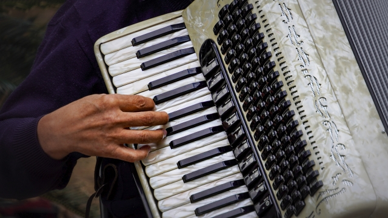

2024.9.15
歴史民俗資料館ロビーコンサート
9 月15 日（日曜） 13時30分～ 14時00分出演者末冨未央ピアノ式アコーディオン

アコーディオンで「おおシャンゼリゼ」や「千と千尋の神隠しの主題歌」などを演奏します。
詳細
日にち 2024年9月15日（日曜）
時間 13時30分から14時00分
場所 歴史民俗資料館ロピー
入場料無料
座席 60席 ※先着順のため、座れないこともあります。
演奏予定曲「ゴンドラの唄」、「いつも何度でも」千と千尋の神隠しの主題歌、「おおシャンゼリゼ」等．